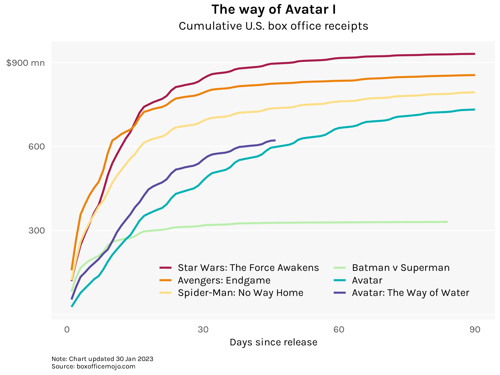
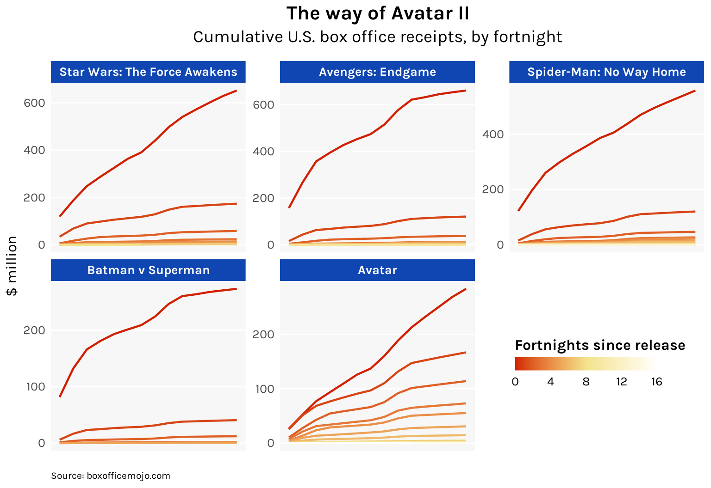

library(tidyverse)
library(rvest)
library(magrittr)
films <- c(
"2691925505", # Star Wars: The Force Awakens
"3059975681", # Avengers: Endgame
"2869659137", # Spider-Man: No Way Home
"2238875137", # Batman v Superman
"876971521", # Avatar
"3372254721" # Avatar: The Way of Water
)
urls <- paste0("https://www.boxofficemojo.com/release/rl", films)
names(urls) <- c(
"Star Wars: The Force Awakens",
"Avengers: Endgame",
"Spider-Man: No Way Home",
"Batman v Superman",
"Avatar",
"Avatar: The Way of Water"
)
df <- tibble(title = NULL, day = NULL, todate = NULL)
for (i in 1:length(urls)) {
df_i <- read_html(urls[i]) %>%
html_nodes("table") %>%
extract2(1) %>%
html_table() %>%
mutate(
title = names(urls)[i],
todate = gsub("[\\$,]", "", `To Date`) %>% as.numeric()
) %>%
select(title, day = Day, todate)
df <- bind_rows(df, df_i)
}
df <- df %>% mutate(title = factor(title, levels = names(urls)))Somehow, Avatar has returned
The highest grossing movie of all time got to the top gradually rather than all at once
line
In 2009, I watched James Cameron’s Avatar and thought, wait a minute, this is just Atlantis: The Lost Empire but with blue people. Then I didn’t think about Avatar again for the next 13 years.
Last week, Avatar: The Way of Water was released, the second in what will now be a five-film, billion-dollar epic. What! In a way, this makes perfect sense: Avatar is somehow still the highest grossing movie of all time. Someone must’ve wanted this, and if you were that someone, then good for you! Your 13-year wait is over, good God.
But I still find it baffling that Avatar has made more money than, say, Avengers: Endgame, despite a far more subdued cultural presence. How did it do this? And can James Cameron pull it off again with Way of Water?
In this post, I visualize the box office trajectories of Avatar, Endgame, and two other blockbusters, Star Wars: The Force Awakens and Spider-Man: No Way Home, to see if anything sets Avatar apart. I add the receipts so far of Way of Water to check if it is on track to repeat its predecessor’s success. And for additional context, I’m also including the would-be blockbuster Batman v Superman, which started strong but quickly fizzled out.
The data was scraped from BoxOfficeMojo.com using the rvest package. There was unfortunately no daily data for worldwide box office receipts so I confined myself to daily U.S. receipts.
The following shows cumulative receipts for the first 90 days of each film’s original theatrical run:
Code
ggplot(
df %>% filter(day < 91),
aes(x = day, y = todate / 1000000, group = title, color = title)
) +
geom_line(linewidth = 1.1) +
# Labels
labs(
title = "The way of Avatar I",
subtitle = "Cumulative U.S. box office receipts",
caption = "Note: Chart updated 26 Feb 2023\nSource: boxofficemojo.com"
) +
scale_x_continuous(
name = "Days since release",
breaks = c(0, 30, 60, 90)
) +
scale_y_continuous(
breaks = seq(0, 900, 300),
labels = c("", 300, 600, "$900 mn")
) +
# Legend
scale_color_manual(values = hcl.colors(n = 6, palette = "Spectral")) +
guides(color = guide_legend(
nrow = 3, ncol = 2,
keyheight = unit(1, "lines")
)) +
# Themes
theme_minimal(base_family = "karla") +
theme(
plot.title = element_text(family = "karla", size = 16, face = "bold", hjust = .5),
plot.subtitle = element_text(size = 14, hjust = .5, margin = margin(b = 10)),
plot.caption = element_text(size = 8, hjust = 0, margin = margin(t = 10)),
axis.ticks = element_blank(),
axis.title.x = element_text(size = 12, margin = margin(t = 5)),
axis.title.y = element_blank(),
axis.text.x = element_text(size = 11, margin = margin(t = 5)),
axis.text.y = element_text(size = 11, margin = margin(r = 5)),
legend.position = c(.6, .15),
legend.title = element_blank(),
legend.text = element_text(size = 12, margin = margin(r = 10)),
panel.background = element_rect(fill = "gray97", color = NA),
panel.grid.major.x = element_blank(),
panel.grid.major.y = element_line(linewidth = .5, color = "white"),
panel.grid.minor.x = element_blank(),
panel.grid.minor.y = element_blank()
)
The Disney marketing machinery is evident in the trajectories of its three movies here. When these came out, they were all anybody could talk about, all anybody wanted to see, and as people flocked to cinemas these movies made a boatload of money very quickly. But the hype started to die down at around the 30-day mark, and receipts plateaued thereafter.
Warner Bros.’ Batman v Superman had a similar start. The pre-release hype was intense, saturating the pop culture landscape in a major way (and in the year 2016 no less!). People rushed to see it and it broke box office records. The only problem was that it was bad, bad, bad. The chart shows how its receipts plateaued immediately, and after just 84 days, it was unceremoniously pulled from theaters.
Avatar did not have a splashy start, but what it had was staying power. Long after the other blockbusters entered their plateaus, Avatar’s cumulative receipts were still growing.
Here is another chart that makes this more apparent. I have segmented each film’s theatrical run into fortnightly (two-week) periods and plotted their cumulative receipts for each fortnight.
Code
df1 <- df %>%
group_by(title) %>%
mutate(
todate_lag = lag(todate),
fortnight = (day - 1) %/% 14
) %>%
replace_na(list(todate_lag = 0)) %>%
group_by(title, fortnight) %>%
mutate(
day2 = 1:n(),
todate2 = todate - min(todate_lag)
) %>%
ungroup()
ggplot(
df1 %>% filter(title != "Avatar: The Way of Water"),
aes(x = day2, y = todate2 / 1000000, group = fortnight, color = fortnight)
) +
geom_line(linewidth = .8) +
facet_wrap(~title, nrow = 2, scales = "free_y") +
# Labels
scale_y_continuous(name = "$ million") +
labs(
title = "The way of Avatar II",
subtitle = "Cumulative U.S. box office receipts, by fortnight",
caption = "Source: boxofficemojo.com"
) +
# Legend
scale_color_gradient2(
low = "#d11f00", mid = "#f2e38c", high = "white",
midpoint = 8,
guide = "colorbar"
) +
guides(color = guide_colorbar(
title = "Fortnights since release",
title.position = "top",
title.vjust = 0,
title.hjust = .5,
direction = "horizontal",
barwidth = unit(8, "lines"),
barheight = unit(.75, "lines"),
ticks = FALSE
)) +
# Themes
theme_minimal(base_family = "karla") +
theme(
plot.title = element_text(size = 16, face = "bold", hjust = .5),
plot.subtitle = element_text(size = 14, hjust = .5, margin = margin(b = 12)),
plot.caption = element_text(size = 8, hjust = 0, margin = margin(t = 15)),
axis.ticks = element_blank(),
axis.title.x = element_blank(),
axis.title.y = element_text(size = 12),
axis.text.x = element_blank(),
axis.text.y = element_text(size = 10, margin = margin(r = 2)),
legend.position = c(.84, .24),
legend.title = element_text(size = 12, face = "bold"),
legend.text = element_text(size = 10),
strip.background = element_rect(fill = "gray80", color = NA),
strip.text = element_text(size = 10, face = "bold", color = "black"),
panel.background = element_rect(fill = "gray97", color = NA),
panel.grid.major.x = element_blank(),
panel.grid.major.y = element_line(linewidth = .5, color = "white"),
panel.grid.minor.x = element_blank(),
panel.grid.minor.y = element_blank()
)
Avatar certainly stands out. In a way, it marked the end of the pre-MCU blockbuster era when the installments of a franchise didn’t come just months or even weeks apart. Such an onslaught of content inevitably detracts from the experience of viewing any single release. Avatar was neither buoyed nor hobbled by its belonging to a mega-franchise, which might go some ways in explaining why people kept seeing it in cinemas for so long.
Interestingly however, James Cameron now appears to be adopting the mega-franchise model as he mass-produces four Avatar sequels slated for biannual releases until 2028. Good luck with that. The franchise game is a crowded space these days, and The Way of Water has apparently already underperformed. But will it go on to have the same staying power as the first Avatar? Or will it fizzle out like BvS?
The stakes are… hilariously high? From Variety:
Cameron apparently told Disney and 20th Century Studios executives that his sequel budget was so high it represented “the worst business case in movie history.” According to the director’s estimates, “you have to be the third or fourth highest-grossing film in history. That’s your threshold. That’s your break even.”
I am no business genius, but if you need your enterprise to be the third or fourth most successful in history just to avoid financial ruin then maybe rethink your strategy. Maybe hedge a little!
Update 30 Jan 2022: Well, he did it. As of my checking this morning, Avatar: The Way of Water has surpassed The Force Awakens to become the fourth highest-grossing film in history. It also bagged a Best Picture nomination while it was at it.